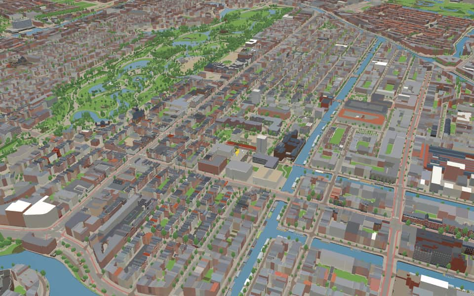
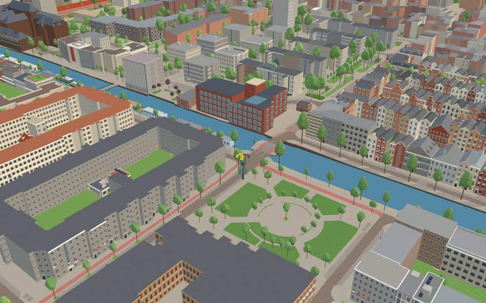
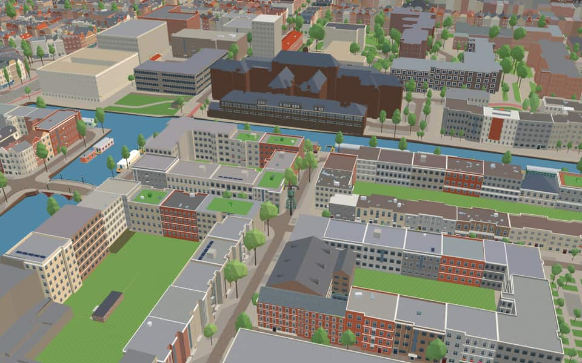
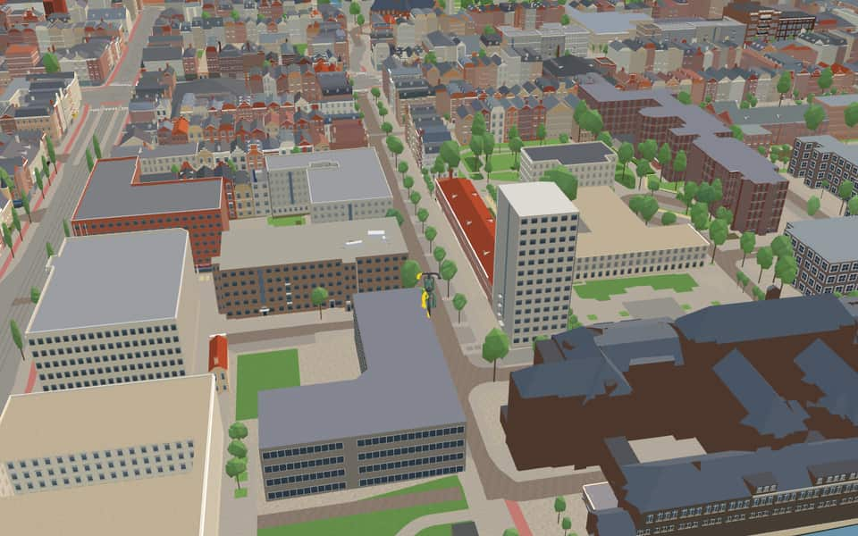

Quarter · Amsterdam
Helmersbuurt
Overtoombuurt is a neighborhood of Amsterdam, Netherlands. Along with the Kinkerbuurt, it is part of the larger neighborhood of Oud-West in the borough of Amsterdam-West. The borough administration distinguishes several smaller areas within the Overtoombuurt: the eastern part north of the Overtoom thoroughfare is called Helmersbuurt, the western section is called…
The name. Named after the Dutch poet Jan Frederik Helmers. It was part of one of the city's expansions at the end of the 19th century. nl.wikipedia.org

In the game
Frames from a ride through Helmersbuurt.



6 more photos of Helmersbuurt

.jpg){kind=link}


.jpg){kind=link}


_02.jpg){kind=link}
Built here
Buildings modelled one by one for the ride.
LAB111 / Pathological Anatomical Laboratory
- No picture yet
Eerste Helmersstraat 213 to 229 (9 houses)
- No picture yet
Eerste Helmersstraat 41 to 51 (6 houses)
- No picture yet
Derde Helmersstraat 51 to 55 (3 houses)
- No picture yet
Eerste Helmersstraat 33 to 37 (3 houses)
- No picture yet
Derde Helmersstraat 56A to 54 (2 houses)
- No picture yet
Derde Helmersstraat 62 to 60 (2 houses)
- No picture yet
Eerste Helmersstraat 122 to 120 (2 houses)
- No picture yet
Eerste Helmersstraat 237 to 239 (2 houses)
- No picture yet
Eerste Helmersstraat 55 to 57 (2 houses)
- No picture yet
Eerste Helmersstraat 56 to 54 (2 houses)
WG-plein 600 (former Wilhelmina Gasthuis pavilion), Amsterdam-West
1931 dark-brown brick hospital wing, five storeys of grouped white windows on the WG-plein side and a two-storey canal front with glazed bay windows on the Kostverlorenvaart
Did you know
Trivia the ride can show you here.
- The neighbourhood became known as the Dichtersbuurt (Poets' Quarter) or the Literary Quarter. Wikipedia (translated from Dutch)
- Writers who lived here include Lodewijk van Deyssel, Willem Kloos and Belcampo. Wikipedia (translated from Dutch)
- Other streets here were named after writers and poets too. Wikipedia (translated from Dutch)
- Digging of the Jacob van Lennepkanaal began in 1884. Wikipedia
- The architect Redeker Bisdom was put in charge of working out the plan in 1883. Wikipedia
- Jan SwammerdambrugA proposed nickname WG-brug derived from the former Wilhelmina Gasthuis was rejected before the final name was selected. nl.wikipedia.org
- NassaukadeNearby Nassauplein and two Nassau streets share the same royal namesake origin. nl.wikipedia.org
- NassaukadeA movable bridge over the Kattensloot was renovated in 1954. nl.wikipedia.org
- NassaukadeEight municipal monuments line this street, including numbers 17 and 18. nl.wikipedia.org
- OvertoomThe children's song Schuitje varen, theetje drinken likely originated here in the 18th century. nl.wikipedia.org
- OvertoomFrom 1345 until later times, this route was known as the Holy Way because it led to a miracle. nl.wikipedia.org
- OvertoomA section near Vondelkerk briefly bore the alternative name Vondelkade before reverting to its original title. nl.wikipedia.org
Names on the map
Where the canal, bridge and street names come from.
Bridges
- Jan SwammerdambrugJan Swammerdam (1637-1680), anatomist and naturalist, who made important microscopic studies, preserved in his 'Bybel der natuure' (Bible of nature).Bridge 2291: a steel bridge for cyclists, dated 2003 in the city's bridge register.
Streets
- Alberdingk ThijmstraatJosephus Albertus Alberdingk Thijm (1820-1889), writer of poems and historical novellas, and professor of aesthetics and art history at the Academie voor Beeldende Kunst in Amsterdam.
- Anna SpenglerstraatElisabeth Catharina (also called Anna) Spengler (1842-c.1905) was a nurse who worked with Johanna Reynvaan for several years on reorganising nursing at the Wilhelmina Gasthuis. The street was originally named Anna Sprenglerstraat in error (council decision of 3 April 1985).
- Arie BiemondstraatNeurologist (1902-1973), attached to the Wilhelminagasthuis. From 1947 to 1970 he was a professor at the Universiteit van Amsterdam.
- Bosboom ToussaintstraatAnna Louisa Geertruide Toussaint (1812-1886), who in 1851 married the painter Jan Bosboom. She wrote a great many novels, most of them historical. The street was named in tribute to her during her lifetime, an exception, then and now, to the rule that living people are not honoured with street names.
- BrederodestraatGerbrand A. Bredero (1585-1618), poet and playwright. His works include 'De Spaanse Brabander'.
- De GenestetstraatPetrus Augustus de Genestet (1829-1861), Remonstrant minister and poet, known above all for his 'Lekedichtjes' (lay poems).
- Derde HelmersstraatJan Frederik Helmers (1767-1813), Amsterdam broker who devoted himself to letters. His works include 'De Hollandsche Natie' (1813). The second part of the Eerste Helmersstraat lay in the municipality of Nieuwer-Amstel until 1896 and was then called Hofdijkstraat (council decision of Nieuwer-Amstel, 9 May 1890). The start of this street was originally a short side street of the Nassaukade called Sophiapark.
- Eerste Constantijn HuygensstraatPoet and prose writer (1596-1687), whose works include 'Hofwijck' and epigrams (sneldichten). He was secretary to several successive stadholders. Before 1894 parts of these streets were called Eerste and Tweede Bilderdijkstraat (council decisions of 15 May 1878 and 19 December 1883).
- Eerste HelmersstraatJan Frederik Helmers (1767-1813), Amsterdam broker who devoted himself to letters. His works include 'De Hollandsche Natie' (1813). The second part of the Eerste Helmersstraat lay in the municipality of Nieuwer-Amstel until 1896 and was then called Hofdijkstraat (council decision of Nieuwer-Amstel, 9 May 1890). The start of this street was originally a short side street of the Nassaukade called Sophiapark.
- Gerard BorstkadeJacobus Gerardus Gerbrant Borst (1902-1975), internist, for 35 years professor at the University of Amsterdam and head of the internal medicine clinic at the Binnengasthuis. During the war years he was, among other things, one of the leaders of the doctors' resistance. Founder of modern blood transfusion therapy.
- Gerard BrandtstraatRemonstrant theologian (1626-1685) who wrote church history at first and poetry later. Until 1896 the street belonged to the municipality of Nieuwer-Amstel and was called H.G. Kosterstraat, after a building contractor (council decision of Nieuwer-Amstel, 5 October 1880).
- Ite BoeremastraatIte Boerema (1902-1980), surgeon, professor of surgery at the University of Amsterdam from 1946 to 1973. He built the hyperbaric pressure chamber in the Wilhelmina Gasthuis.
13 more streets with a story
- Jacob van LennepkadeProse writer (1802-1868), mainly of historical novels, among them 'De roos van Dekama' and 'Ferdinand Huyck'.
- Jan SwammerdambrugJan Swammerdam (1637-1680), anatomist and naturalist, who made important microscopic studies, preserved in his 'Bybel der natuure' (Bible of nature).
- Jeltje de Bosch KemperpadJonkvrouw de Bosch Kemper (1836-1916), the driving force behind several associations that organised nursing courses, and co-founder of the Tesselschade association. She promoted, among other things, the founding of the Amsterdam School of Domestic Science and the drawing school for girls.
- KanaalstraatThe kanaal (canal) meant here is the nearby Jacob van Lennepkanaal.
- KetelhuispleinThe very striking boiler house of the former Wilhelmina Gasthuis.
- Marius van Bouwdijk BastiaansestraatMarius A. van Bouwdijk Bastiaanse (1886-1964), gynaecologist at the Wilhelmina Gasthuis and professor at the University of Amsterdam.
- NassaukadeNamed after our royal house of Orange-Nassau. Before it was named in 1879, the quay was called Buitensingel.
- Nicolaas BeetsstraatMan of letters and writer (1814-1903), who as a student wrote the celebrated 'Camera Obscura' under the pseudonym Hildebrand.
- OvertoomNamed after the overtoom (a dam over which boats were hauled) built in the Schinkel in the fourteenth century. Until it was filled in in 1904 the Overtoom was a canal, the Heiligewegse or Overtoomse vaart. The southern quay, as far as it lay in Amsterdam, was called Vondelkade (council decision of 29 September 1875). The north side (the quiet side) has always been called Overtoom.
- Tweede Constantijn HuygensstraatPoet and prose writer (1596-1687), whose works include 'Hofwijck' and epigrams (sneldichten). He was secretary to several successive stadholders. Before 1894 parts of these streets were called Eerste and Tweede Bilderdijkstraat (council decisions of 15 May 1878 and 19 December 1883).
- Tweede HelmersstraatJan Frederik Helmers (1767-1813), Amsterdam broker who devoted himself to letters. His works include 'De Hollandsche Natie' (1813). The second part of the Eerste Helmersstraat lay in the municipality of Nieuwer-Amstel until 1896 and was then called Hofdijkstraat (council decision of Nieuwer-Amstel, 9 May 1890). The start of this street was originally a short side street of the Nassaukade called Sophiapark.
- WG-pleinThe former Wilhelmina Gasthuis, popularly known simply as the W.G. The square and surrounding streets were laid out after the hospital closed and was partly demolished. It was founded in 1891 on and beside the grounds of the old Pesthuis (plague house), became a university hospital in 1957, and in 1983 its last patients moved to the Academic Medical Centre. Some of its buildings survive, converted into homes and business premises.
- WilhelminastraatWilhelmina Helena Pauline Maria, Princess of Orange-Nassau (1880-1962), daughter of King William III and Queen Emma, Queen of the Netherlands from 1898 to 1948.
3 other streets without a recorded story
1e Helmersstraat · 2e Helmersstraat · 3e Helmersstraat